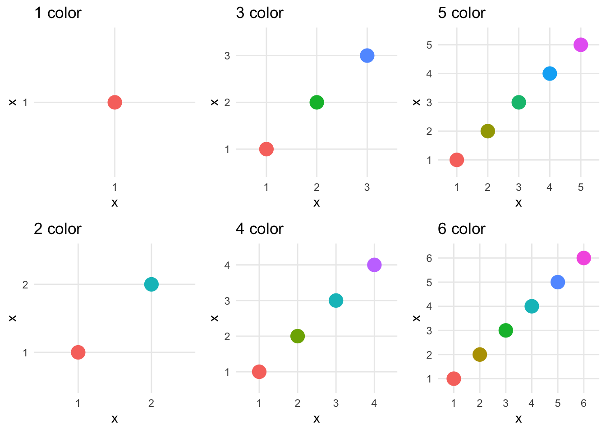
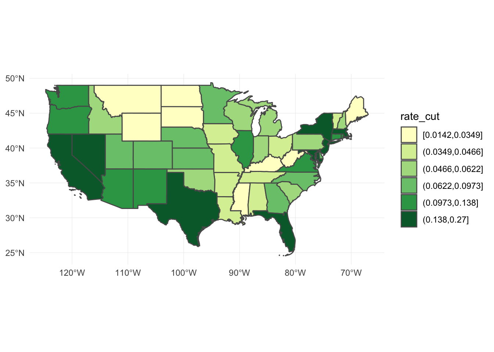
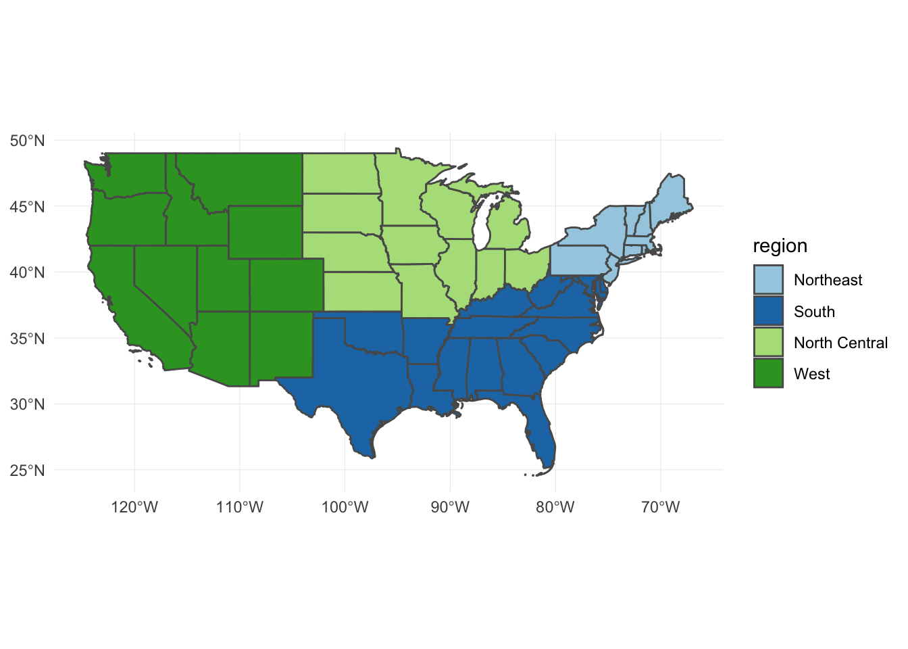

Drawing vector maps with ggplot2 and sf
library(tidyverse)
library(sf)
options(digits = 3)
set.seed(1234)
theme_set(theme_minimal())Import USA state boundaries
usa <- st_read("data/census_bureau/cb_2013_us_state_20m/cb_2013_us_state_20m.shp")## Reading layer `cb_2013_us_state_20m' from data source `/Users/soltoffbc/Projects/Computing for Social Sciences/uc-cfss.github.io/data/census_bureau/cb_2013_us_state_20m/cb_2013_us_state_20m.shp' using driver `ESRI Shapefile'
## Simple feature collection with 52 features and 9 fields
## geometry type: MULTIPOLYGON
## dimension: XY
## bbox: xmin: -179 ymin: 17.9 xmax: 180 ymax: 71.4
## epsg (SRID): 4269
## proj4string: +proj=longlat +datum=NAD83 +no_defsDraw the boundaries
ggplot(data = usa) +
geom_sf()
Plot a subset
usa_48 <- usa %>%
filter(!(NAME %in% c("Alaska", "District of Columbia", "Hawaii", "Puerto Rico")))
ggplot(data = usa_48) +
geom_sf()
ggplot(data = usa_48) +
geom_sf(fill = "palegreen", color = "black")
Add data to the map
Region boundaries serve as the background in geospatial data visualization - so now we need to add data. Some types of geographic data (points and symbols) are overlaid on top of the boundaries, whereas other data (fill) are incorporated into the region layer itself.
Points
Let’s use our usa_48 map data to add some points. The airports data frame in the nycflights13 package includes geographic info on airports in the United States.
library(nycflights13)
airports## # A tibble: 1,458 x 8
## faa name lat lon alt tz dst tzone
## <chr> <chr> <dbl> <dbl> <int> <dbl> <chr> <chr>
## 1 04G Lansdowne Airport 41.1 -80.6 1044 -5 A America/New_…
## 2 06A Moton Field Municip… 32.5 -85.7 264 -6 A America/Chic…
## 3 06C Schaumburg Regional 42.0 -88.1 801 -6 A America/Chic…
## 4 06N Randall Airport 41.4 -74.4 523 -5 A America/New_…
## 5 09J Jekyll Island Airpo… 31.1 -81.4 11 -5 A America/New_…
## 6 0A9 Elizabethton Munici… 36.4 -82.2 1593 -5 A America/New_…
## 7 0G6 Williams County Air… 41.5 -84.5 730 -5 A America/New_…
## 8 0G7 Finger Lakes Region… 42.9 -76.8 492 -5 A America/New_…
## 9 0P2 Shoestring Aviation… 39.8 -76.6 1000 -5 U America/New_…
## 10 0S9 Jefferson County In… 48.1 -123. 108 -8 A America/Los_…
## # ... with 1,448 more rowsEach airport has it’s geographic location encoded through lat and lon. To draw these points on the map, basically we draw a scatterplot with x = lon and y = lat. In fact we could simply do that:
ggplot(airports, aes(lon, lat)) +
geom_point()
Let’s overlay it with the mapped state borders:
ggplot(data = usa_48) +
geom_sf() +
geom_point(data = airports, aes(x = lon, y = lat), shape = 1)
Slight problem. We have airports listed outside of the continental United States. There are a couple ways to rectify this. Unfortunately airports does not include a variable identifying state so the filter() operation is not that simple. The easiest solution is to crop the limits of the graph using coord_sf() to only show the mainland:
ggplot(data = usa_48) +
geom_sf() +
geom_point(data = airports, aes(x = lon, y = lat), shape = 1) +
coord_sf(xlim = c(-130, -60),
ylim = c(20, 50))
Symbols
We can change the size or type of symbols on the map. For instance, we can draw a bubble plot (also known as a proportional symbol map) and encode the altitude of the airport through the size channel:
ggplot(data = usa_48) +
geom_sf() +
geom_point(data = airports, aes(x = lon, y = lat, size = alt),
fill = "grey", color = "black", alpha = .2) +
coord_sf(xlim = c(-130, -60),
ylim = c(20, 50)) +
scale_size_area(guide = FALSE)
Circle area is proportional to the airport’s altitude (in feet). Or we could scale it based on the number of arriving flights in flights:
airports_n <- flights %>%
count(dest) %>%
left_join(airports, by = c("dest" = "faa"))
ggplot(data = usa_48) +
geom_sf() +
geom_point(data = airports_n, aes(x = lon, y = lat, size = n),
fill = "grey", color = "black", alpha = .2) +
coord_sf(xlim = c(-130, -60),
ylim = c(20, 50)) +
scale_size_area(guide = FALSE)
airportscontains a list of virtually all commercial airports in the United States. Howeverflightsonly contains data on flights departing from New York City airports (JFK, LaGuardia, or Newark) and only services a few airports around the country.
Fill
Fill (choropleths)
Choropleth maps encode information by assigning shades of colors to defined areas on a map (e.g. countries, states, counties, zip codes). There are lots of ways to tweak and customize these graphs, which is generally a good idea because remember that color is one of the harder-to-decode channels.
We’ll continue to use the usa_48 simple features data frame and draw a choropleth for the number of foreign-born individuals in each state. We get those files from the census_bureau folder. Let’s also normalize our measure by the total population to get the rate of foreign-born individuals in the population:
(fb_state <- read_csv("data/census_bureau/ACS_13_5YR_B05012_state/ACS_13_5YR_B05012.csv") %>%
mutate(rate = HD01_VD03 / HD01_VD01))## # A tibble: 51 x 10
## GEO.id GEO.id2 `GEO.display-la… HD01_VD01 HD02_VD01 HD01_VD02 HD02_VD02
## <chr> <chr> <chr> <int> <chr> <int> <int>
## 1 04000… 01 Alabama 4799277 <NA> 4631045 2881
## 2 04000… 02 Alaska 720316 <NA> 669941 1262
## 3 04000… 04 Arizona 6479703 <NA> 5609835 7725
## 4 04000… 05 Arkansas 2933369 <NA> 2799972 2568
## 5 04000… 06 California 37659181 <NA> 27483342 30666
## 6 04000… 08 Colorado 5119329 <NA> 4623809 5778
## 7 04000… 09 Connecticut 3583561 <NA> 3096374 5553
## 8 04000… 10 Delaware 908446 <NA> 831683 2039
## 9 04000… 11 District of Col… 619371 <NA> 534142 2017
## 10 04000… 12 Florida 19091156 <NA> 15392410 16848
## # ... with 41 more rows, and 3 more variables: HD01_VD03 <int>,
## # HD02_VD03 <int>, rate <dbl>Join the data
Now that we have our data, we want to draw it on the map. fb_state contains one row per state, as does usa_48. Since there is a one-to-one match between the data frames, we join the data frames together first, then use that single data frame to draw the map. This differs from the approach above for drawing points because a point feature is not the same thing as a polygon feature. That is, there were more airports then there were states. Because the spatial data is stored in a data frame with one row per state, all we need to do is merge the data frames together on a column that uniquely identifies each row in each data frame.
(usa_fb <- usa_48 %>%
left_join(fb_state, by = c("STATEFP" = "GEO.id2")))## Simple feature collection with 48 features and 18 fields
## geometry type: MULTIPOLYGON
## dimension: XY
## bbox: xmin: -125 ymin: 24.5 xmax: -66.9 ymax: 49.4
## epsg (SRID): 4269
## proj4string: +proj=longlat +datum=NAD83 +no_defs
## First 10 features:
## STATEFP STATENS AFFGEOID GEOID STUSPS NAME LSAD ALAND
## 1 01 01779775 0400000US01 01 AL Alabama 00 1.31e+11
## 2 05 00068085 0400000US05 05 AR Arkansas 00 1.35e+11
## 3 06 01779778 0400000US06 06 CA California 00 4.03e+11
## 4 09 01779780 0400000US09 09 CT Connecticut 00 1.25e+10
## 5 12 00294478 0400000US12 12 FL Florida 00 1.39e+11
## 6 13 01705317 0400000US13 13 GA Georgia 00 1.49e+11
## 7 16 01779783 0400000US16 16 ID Idaho 00 2.14e+11
## 8 17 01779784 0400000US17 17 IL Illinois 00 1.44e+11
## 9 18 00448508 0400000US18 18 IN Indiana 00 9.28e+10
## 10 20 00481813 0400000US20 20 KS Kansas 00 2.12e+11
## AWATER GEO.id GEO.display-label HD01_VD01 HD02_VD01 HD01_VD02
## 1 4.59e+09 0400000US01 Alabama 4799277 <NA> 4631045
## 2 2.96e+09 0400000US05 Arkansas 2933369 <NA> 2799972
## 3 2.05e+10 0400000US06 California 37659181 <NA> 27483342
## 4 1.82e+09 0400000US09 Connecticut 3583561 <NA> 3096374
## 5 3.14e+10 0400000US12 Florida 19091156 <NA> 15392410
## 6 4.95e+09 0400000US13 Georgia 9810417 <NA> 8859747
## 7 2.40e+09 0400000US16 Idaho 1583364 <NA> 1489560
## 8 6.20e+09 0400000US17 Illinois 12848554 <NA> 11073828
## 9 1.54e+09 0400000US18 Indiana 6514861 <NA> 6206801
## 10 1.35e+09 0400000US20 Kansas 2868107 <NA> 2677007
## HD02_VD02 HD01_VD03 HD02_VD03 rate geometry
## 1 2881 168232 2881 0.0351 MULTIPOLYGON (((-88.3 30.2,...
## 2 2568 133397 2568 0.0455 MULTIPOLYGON (((-94.6 36.5,...
## 3 30666 10175839 30666 0.2702 MULTIPOLYGON (((-119 33.5, ...
## 4 5553 487187 5553 0.1360 MULTIPOLYGON (((-73.7 41.1,...
## 5 16848 3698746 16848 0.1937 MULTIPOLYGON (((-80.7 24.9,...
## 6 7988 950670 7988 0.0969 MULTIPOLYGON (((-85.6 35, -...
## 7 2528 93804 2528 0.0592 MULTIPOLYGON (((-117 44.4, ...
## 8 10091 1774726 10093 0.1381 MULTIPOLYGON (((-91.5 40.2,...
## 9 4499 308060 4500 0.0473 MULTIPOLYGON (((-88.1 37.9,...
## 10 3095 191100 3100 0.0666 MULTIPOLYGON (((-102 40, -1...Draw the map
ggplot(data = usa_fb) +
geom_sf(aes(fill = rate))
Bin data to discrete intervals
Remember
cut()? There are someggplot2variants on this function that more explicitly identify how we want to bin the numeric vector (column).
cut_interval()- makesngroups with equal range
usa_fb %>%
mutate(rate_cut = cut_interval(rate, 6)) %>%
ggplot() +
geom_sf(aes(fill = rate_cut))
cut_number()- makesngroups with (approximately) equal numbers of observations
usa_fb %>%
mutate(rate_cut = cut_number(rate, 6)) %>%
ggplot() +
geom_sf(aes(fill = rate_cut))
Select a color palette
Selection of your color palette is perhaps the most important decision to make when drawing a choropleth. By default, ggplot2 picks evenly spaced hues around the Hue-Chroma-Luminance (HCL) color space:1
# generate simulated data points
sim_points <- data_frame(x = factor(1:6))
plots <- purrr::map(1:6, ~ ggplot(sim_points[1:.x, ], aes(x, x, color = x)) +
geom_point(size = 5) +
ggtitle(paste(.x, "color")) +
theme(legend.position = "none"))
gridExtra::marrangeGrob(plots, nrow = 2, ncol = 3, top = NULL)
ggplot2 gives you many different ways of defining and customizing your scale_color_ and scale_fill_ palettes, but will not tell you if they are optimal for your specific usage in the graph.
Color Brewer
Color Brewer is a diagnostic tool for selecting optimal color palettes for maps with discrete variables. The authors have generated different color palettes designed to make differentiating between categories easy depending on the scaling of your variable. All you need to do is define the number of categories in the variable, the nature of your data (sequential, diverging, or qualitative), and a color scheme. There are also options to select palettes that are colorblind safe, print friendly, and photocopy safe. Depending on the combination of options, you may not find any color palette that matches your criteria. In such a case, consider reducing the number of data classes.
Sequential
seq_plot <- usa_fb %>%
mutate(rate_cut = cut_number(rate, 6)) %>%
ggplot() +
geom_sf(aes(fill = rate_cut))
seq_plot +
scale_fill_brewer(palette = "BuGn")
seq_plot +
scale_fill_brewer(palette = "YlGn")
seq_plot +
scale_fill_brewer(palette = "Blues")
Qualitative
# get state regions and subregions
state_data <- data_frame(name = state.name,
region = state.region,
subregion = state.division,
abb = state.abb)
# set region base plot
region_p <- usa_48 %>%
left_join(state_data, by = c("NAME" = "name")) %>%
ggplot() +
geom_sf(aes(fill = region))
region_p
# try different color brewers
region_p +
scale_fill_brewer(palette = "Paired")
region_p +
scale_fill_brewer(palette = "Dark2")
region_p +
scale_fill_brewer(palette = "Pastel2")
# set subregion base plot
subregion_p <- usa_48 %>%
left_join(state_data, by = c("NAME" = "name")) %>%
ggplot() +
geom_sf(aes(fill = subregion))
subregion_p
subregion_p +
scale_fill_brewer(palette = "Paired")
subregion_p +
scale_fill_brewer(palette = "Set1")
subregion_p +
scale_fill_brewer(palette = "Pastel1")
Changing map projection
Representing portions of the globe on a flat surface can be challenging. Depending on how you project the map, you can distort or emphasize certain features of the map. Fortunately, ggplot() includes the coord_sf() function which allows us to easily implement different projection methods.
map_proj_base <- ggplot(data = usa_48) +
geom_sf()
map_proj_base +
coord_sf(crs = "+proj=merc") +
ggtitle("Mercator projection")
map_proj_base +
coord_sf(crs = "+proj=cea +lon_0=0 +lat_ts=45") +
ggtitle("Gall-Peters projection")
map_proj_base +
coord_sf(crs = "+proj=aea +lat_1=25 +lat_2=50 +lon_0=-100") +
ggtitle("Albers equal-area projection")
map_proj_base +
coord_sf(crs = "+proj=laea +lat_0=35 +lon_0=-100") +
ggtitle("Lambert azimuthal projection")
Acknowledgements
Session Info
devtools::session_info()## setting value
## version R version 3.5.0 (2018-04-23)
## system x86_64, darwin15.6.0
## ui X11
## language (EN)
## collate en_US.UTF-8
## tz America/Chicago
## date 2018-07-03
##
## package * version date source
## assertthat 0.2.0 2017-04-11 CRAN (R 3.5.0)
## backports 1.1.2 2017-12-13 CRAN (R 3.5.0)
## base * 3.5.0 2018-04-24 local
## bindr 0.1.1 2018-03-13 CRAN (R 3.5.0)
## bindrcpp * 0.2.2 2018-03-29 CRAN (R 3.5.0)
## broom 0.4.4 2018-03-29 CRAN (R 3.5.0)
## cellranger 1.1.0 2016-07-27 CRAN (R 3.5.0)
## class 7.3-14 2015-08-30 CRAN (R 3.5.0)
## classInt 0.2-3 2018-04-16 CRAN (R 3.5.0)
## cli 1.0.0 2017-11-05 CRAN (R 3.5.0)
## codetools 0.2-15 2016-10-05 CRAN (R 3.5.0)
## colorspace 1.3-2 2016-12-14 CRAN (R 3.5.0)
## compiler 3.5.0 2018-04-24 local
## crayon 1.3.4 2017-09-16 CRAN (R 3.5.0)
## datasets * 3.5.0 2018-04-24 local
## DBI 1.0.0 2018-05-02 CRAN (R 3.5.0)
## devtools 1.13.5 2018-02-18 CRAN (R 3.5.0)
## digest 0.6.15 2018-01-28 CRAN (R 3.5.0)
## dplyr * 0.7.6 2018-06-29 cran (@0.7.6)
## e1071 1.6-8 2017-02-02 CRAN (R 3.5.0)
## evaluate 0.10.1 2017-06-24 CRAN (R 3.5.0)
## forcats * 0.3.0 2018-02-19 CRAN (R 3.5.0)
## foreign 0.8-70 2017-11-28 CRAN (R 3.5.0)
## ggplot2 * 2.2.1.9000 2018-07-02 Github (hadley/ggplot2@348b26f)
## glue 1.2.0 2017-10-29 CRAN (R 3.5.0)
## graphics * 3.5.0 2018-04-24 local
## grDevices * 3.5.0 2018-04-24 local
## grid 3.5.0 2018-04-24 local
## gtable 0.2.0 2016-02-26 CRAN (R 3.5.0)
## haven 1.1.1 2018-01-18 CRAN (R 3.5.0)
## hms 0.4.2 2018-03-10 CRAN (R 3.5.0)
## htmltools 0.3.6 2017-04-28 CRAN (R 3.5.0)
## httr 1.3.1 2017-08-20 CRAN (R 3.5.0)
## jsonlite 1.5 2017-06-01 CRAN (R 3.5.0)
## knitr 1.20 2018-02-20 CRAN (R 3.5.0)
## lattice 0.20-35 2017-03-25 CRAN (R 3.5.0)
## lazyeval 0.2.1 2017-10-29 CRAN (R 3.5.0)
## lubridate 1.7.4 2018-04-11 CRAN (R 3.5.0)
## magrittr 1.5 2014-11-22 CRAN (R 3.5.0)
## memoise 1.1.0 2017-04-21 CRAN (R 3.5.0)
## methods * 3.5.0 2018-04-24 local
## mnormt 1.5-5 2016-10-15 CRAN (R 3.5.0)
## modelr 0.1.2 2018-05-11 CRAN (R 3.5.0)
## munsell 0.4.3 2016-02-13 CRAN (R 3.5.0)
## nlme 3.1-137 2018-04-07 CRAN (R 3.5.0)
## nycflights13 * 0.2.2 2017-01-27 CRAN (R 3.5.0)
## parallel 3.5.0 2018-04-24 local
## pillar 1.2.3 2018-05-25 CRAN (R 3.5.0)
## pkgconfig 2.0.1 2017-03-21 CRAN (R 3.5.0)
## plyr 1.8.4 2016-06-08 CRAN (R 3.5.0)
## psych 1.8.4 2018-05-06 CRAN (R 3.5.0)
## purrr * 0.2.5 2018-05-29 CRAN (R 3.5.0)
## R6 2.2.2 2017-06-17 CRAN (R 3.5.0)
## Rcpp 0.12.17 2018-05-18 CRAN (R 3.5.0)
## readr * 1.1.1 2017-05-16 CRAN (R 3.5.0)
## readxl 1.1.0 2018-04-20 CRAN (R 3.5.0)
## reshape2 1.4.3 2017-12-11 CRAN (R 3.5.0)
## rlang 0.2.1 2018-05-30 CRAN (R 3.5.0)
## rmarkdown 1.9 2018-03-01 CRAN (R 3.5.0)
## rprojroot 1.3-2 2018-01-03 CRAN (R 3.5.0)
## rstudioapi 0.7 2017-09-07 CRAN (R 3.5.0)
## rvest 0.3.2 2016-06-17 CRAN (R 3.5.0)
## scales 0.5.0 2017-08-24 CRAN (R 3.5.0)
## sf * 0.6-3 2018-05-17 CRAN (R 3.5.0)
## spData 0.2.8.3 2018-03-25 CRAN (R 3.5.0)
## stats * 3.5.0 2018-04-24 local
## stringi 1.2.2 2018-05-02 CRAN (R 3.5.0)
## stringr * 1.3.1 2018-05-10 CRAN (R 3.5.0)
## tibble * 1.4.2 2018-01-22 CRAN (R 3.5.0)
## tidyr * 0.8.1 2018-05-18 CRAN (R 3.5.0)
## tidyselect 0.2.4 2018-02-26 CRAN (R 3.5.0)
## tidyverse * 1.2.1 2017-11-14 CRAN (R 3.5.0)
## tools 3.5.0 2018-04-24 local
## udunits2 0.13 2016-11-17 CRAN (R 3.5.0)
## units 0.5-1 2018-01-08 CRAN (R 3.5.0)
## utils * 3.5.0 2018-04-24 local
## withr 2.1.2 2018-03-15 CRAN (R 3.5.0)
## xml2 1.2.0 2018-01-24 CRAN (R 3.5.0)
## yaml 2.1.19 2018-05-01 CRAN (R 3.5.0)Check out chapter 6.6.2 in
ggplot2: Elegant Graphics for Data Analysis for a much more thorough explanation of the theory behind this selection process↩
This work is licensed under the CC BY-NC 4.0 Creative Commons License.